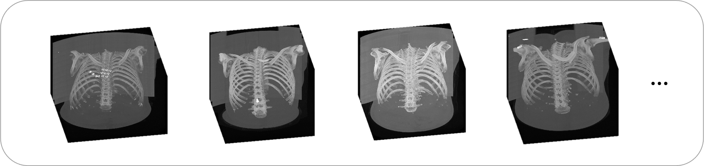

Deep-learning-assisted detection and segmentation of rib fractures from CT scans:
Development
and validation of FracNet
2 Shanghai Jiao Tong University
3 MoE Key Lab of Artificial Intelligence, AI Institute, Shanghai Jiao Tong University
4 Dianei Technology
5 Huawei Hisilicon
6 Institute of Functional and Molecular Medical Imaging, Fudan University
Abstract
Background:
Diagnosis of rib fractures plays an important role in identifying trauma severity. However, quickly
and precisely identifying the rib fractures in a large number of CT images with increasing number of
patients is a tough task, which is also subject to the qualification of radiologist. We aim at a
clinically applicable automatic system for rib fracture detection and segmentation from CT scans.
Methods:
A total of 7,473 annotated traumatic rib fractures from 900 patients in a single center were
enrolled into our dataset, named RibFrac Dataset, which were annotated with a human-in-the-loop
labeling procedure. We developed a deep learning model, named FracNet, to detect and segment rib
fractures. 720, 60 and 120 patients were randomly split as training cohort, tuning cohort and test
cohort, respectively. Free-Response ROC (FROC) analysis was used to evaluate the sensitivity and
false positives of the detection performance, and Intersection-over-Union (IoU) and Dice Coefficient
(Dice) were used to evaluate the segmentation performance of predicted rib fractures. Observer
studies, including independent human-only study and human-collaboration study, were used to
benchmark the FracNet with human performance and evaluate its clinical applicability. A annotated
subset of RibFrac Dataset, including 420 for training, 60 for tuning and 120 for test, as well as
our code for model training and evaluation, was open to research community to facilitate both
clinical and engineering research.
Findings:
Our method achieved a detection sensitivity of 92.9% with 5.27 false positives per scan and a
segmentation Dice of 71.5%on the test cohort. Human experts achieved much lower false positives per
scan, while underperforming the deep neural networks in terms of detection sensitivities with longer
time in diagnosis. With human-computer collobration, human experts achieved higher detection
sensitivities than human-only or computer-only diagnosis.
Interpretation:
The proposed FracNet provided increasing detection sensitivity of rib fractures with significantly
decreased clinical time consumed, which established a clinically applicable method to assist the
radiologist in clinical practice.
RibFrac Dataset
We collect a large-scale rib fracture CT dataset, named RibFrac Dataset as a benchmark for developping algorithms on rib fracture detection, segmentation and classification. You may access the public part of RibFrac dataset via RibFrac Challenge website after one-click free registeration, which was an official MICCAI 2020 challenge. There is sight difference with the public dataset in this paper and that in the RibFrac Challenge, please refer to the RibFrac Challenge website for details.
| Cohorts | Availability | No. Patients / CT Scans | No. CT Slices | No. Fractures |
|---|---|---|---|---|
| Training | Total | 720 | 265,302 | 6,156 |
| Public | 420 | 154,127 | 3,987 | |
| In-House | 300 | 111,175 | 2,169 | |
| Tuning | Public | 60 | 22,562 | 435 |
| Test | Public | 120 | 44,619 | 882 |

Network Architecture of FracNet
A 3D-UNet-based convolutional neural network, named FracNet, was developed to segment the fractures in a sliding window fashion.
Model Performance
FracNet performs consistently on RibFrac cohorts
Human-computer collaboration
| Detection Performance | Clinical Time | |||
|---|---|---|---|---|
| Sensitivity | Avg FP | Workflow | Average Time | |
| FracNet | 92.9% | 5.27 | Model (31s) | 31s |
| R1 | 79.1% | 1.34 | Diagnosis (322s) + Segmentation (579s) | 901s |
| R2 | 75.9% | 0.92 | Diagnosis (282s) + Segmentation (550s) | 832s |
| R1-FracNet Co. | 93.4% | 1.58 | Model (31s) + FPR (79s) + Segmentation (20s) | 130s |
| R2-FracNet Co. | 94.4% | 1.21 | Model (31s) + FPR (58s) + Segmentation (25s) | 114s |
Citation and License
If you find this project useful, please cite our paper as:
Liang Jin, Jiancheng Yang, Kaiming Kuang, Bingbing Ni, Yiyi Gao, Yingli Sun, Pan Gao, Weiling
Ma, Mingyu Tan, Hui Kang, Jiajun Chen, Ming Li. Deep-Learning-Assisted Detection and
Segmentation of Rib Fractures from CT Scans: Development and Validation of FracNet. EBioMedicine
(2020).
or using bibtex:
@article{ribfrac2020,
title={Deep-Learning-Assisted Detection and Segmentation of Rib Fractures from CT Scans:
Development and Validation of FracNet},
author={Jin, Liang and Yang, Jiancheng and Kuang, Kaiming and Ni, Bingbing and Gao, Yiyi and
Sun, Yingli and Gao, Pan and Ma, Weiling and Tan, Mingyu and Kang, Hui and Chen, Jiajun and Li,
Ming},
journal={EBioMedicine},
year={2020},
publisher={Elsevier}
}
This work is licensed under a Creative Commons Attribution-NonCommercial 4.0 International (CC BY-NC 4.0) License.
Copyright © 2020- RibFrac Team